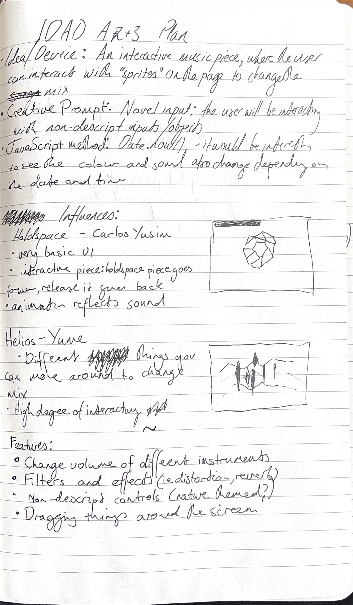
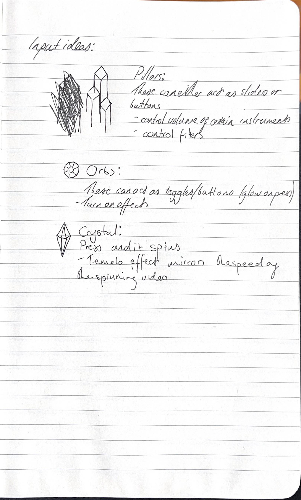

Plan:
Over Assignment 2 and 3, we are designing and developing an interface for an interactive audio project, using the Tone.js framework. For this project, I would like to design an interactive music piece, where the user can change aspects of the mix by interacting with abstract controls.
We are given a set of creative prompts to work with for the project:
- No text characters
- All text characters
- Skeuomorphism
- Spacial control
- Novel input
I plan on choosing the prompt "Novel input". I want to achieve this through abstract controls, resembling a an art piece or video game, through which the user can interact with the piece.
We must also use one of the following JavaScript methods in our project:
- Random : Math.random()
- Date/time : Date.now()
- Location : navigator.geolocation.getCurrentPosition()
I plan on choosing "Date/time", using the time of day to change the appearance of the scene.
Sketches:
I wanted to use 3D graphics resembling the artstyle of the video game Monument Valley, inspiring play in the viewer. In turn, it also will evoke the optically puzzling works of M.C Escher, eliciting experimentation from the viewer.
Rendering 3D graphics in a web project would be hard to achieve in this project due to my lack of previous experience with it and the limited time available in the assignment. I experimented with creating pre-rendered sprites in Blender and implementing them in an interactive Figma prototype, to which I acheived a degree of success:
I also wanted to test how much effort it would take to replicate this with HTML+CSS+JS, to evaluate whether this was achieveable in the timeframe of the assignment:
This was also somewhat successful. There are some problems I will need to solve to have success with this method:
- I need to learn how to limit how far I can drag an item
- The shadow for the rightmost pillar is attached to the image. How can I make sure this isn't exposed to the viewer?
- Dragging the afforementioned shadow moves the "wrong" pillar
- I need to decide whether the pillars are sliders or buttons